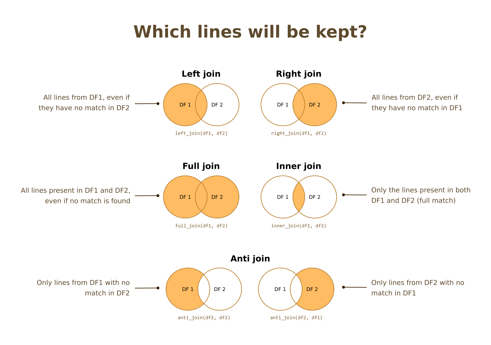
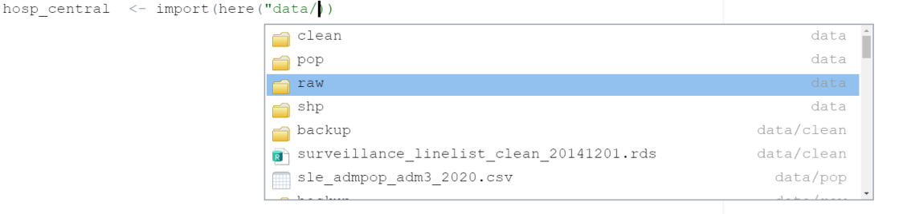
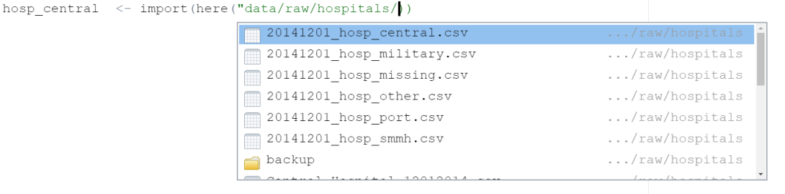

Introduction to R for Applied Epidemiology and Public Health
Welcome
Welcome to the live course “Introduction to R for applied epidemiologists”, offered by Applied Epi - a nonprofit organisation that offers open-source tools, training, and support to frontline public health practitioners.

Joining data
This exercise focuses on joining data frames.
Format
This exercise will guide you through a set of tasks.
You should perform these tasks in RStudio and on your local
computer.
Getting Help
There are several ways to get help:
- Look for the “helpers” (see below)
- Ask your live course instructor/facilitator for help
- Ask a colleague or other participant in the course for tips
- Post a question in Applied Epi Community in the category for questions about Applied Epi Training
Here is what those “helpers” will look like:
Click to read a hint
Here you will see a helpful hint!
Click to see a solution (try it yourself first!)
linelist %>%
filter(
age > 25,
district == "Bolo"
)Here is more explanation about why the solution works.
Quiz questions
Please complete the quiz questions that you encounter throughout the tutorial. Answering will help you to comprehend the material, and will also help us to improve the exercises for future students.
To practice, please answer the following questions:
Icons
You will see these icons throughout the exercises:
| Icon | Meaning |
|---|---|
| Observe | |
| Alert! | |
| An informative note | |
| Time for you to code! | |
| Change to another window | |
| Remember this for later |
Learning objectives
In this exercise you will:
- Review the types of joins, and their corresponding commands in
R
- Understand which joins to apply and when
- Combine several hospital case linelists together by binding
rows
- Join together surveillance linelist, medical linelist, and other lab and case investigation datasets
Prepare
Open your R project and R script.
Run the code from the top of your script:
- Load packages
- Import and clean the surveillance linelist
surv
Below your cleaning code (pipe chain), create a new script section for “Joining data”.
The new header should look something like this:
# Joining data ----------------------------------------------Binding rows
Combining datasets can sometimes be as simple as combining the rows of data frames that have exactly the same columns. For example, if you have multiple study sites, or clinical sites, that are sending you data in exactly the same format.
Hospital datasets
In our case study Ebola outbreak, there are six datasets from various hospitals in the “data/raw/hospitals” subfolder of the “intro_course” R project. In Module 1, you should have re-named them to the following standardized syntax (if not, please do so now, or replace them using the “backup” renamed files in the “data/raw/hospitals/backup” folder):
- 20141201_hosp_central.csv
- 20141201_hosp_military.csv
- 20141201_hosp_port.csv
- 20141201_hosp_smmh.csv
- 20141201_hosp_other.csv
- 20141201_hosp_missing.csv
Each file corresponds with a particular hospital (Central, Military, Port, St. Mark’s) and there are datasets containing record for patients from other hospitals, or for whom the hospital is missing.
Near the top of your R script (in the section for importing
data), write and run some commands to import the hospital linelist files
from the “data/raw/hospitals” subfolder. Name the data frames
in R as hosp_central, hosp_port,
hosp_missing, etc.
Click to see a solution (try it yourself first!)
As a reminder, you should write these commands in the importing section of your script, for optimal organization.
hosp_central <- import(here("data", "raw", "hospitals", "20141201_hosp_central.csv"))
hosp_military <- import(here("data", "raw", "hospitals", "20141201_hosp_military.csv"))
hosp_port <- import(here("data", "raw", "hospitals", "20141201_hosp_port.csv"))
hosp_smmh <- import(here("data", "raw", "hospitals", "20141201_hosp_smmh.csv"))
hosp_other <- import(here("data", "raw", "hospitals", "20141201_hosp_other.csv"))
hosp_missing <- import(here("data", "raw", "hospitals", "20141201_hosp_missing.csv"))Open the data frames in R, and observe the column names
Because the columns have the same names, you should be able to simply “bind” the rows together - digitally stacking the 6 data frames on top of one another.
This is best done with the function bind_rows(), from
the package {dplyr}. This function is flexible in that the columns do
not even have to be in the same order for the data frames to be bound
together. The function will align the columns automatically - the
columns only have to have the same names.
Here is the syntax - it is quite simple:
bind_rows(df1, df2, df3, df4, ...)Above, “dfX” would be replaced by the names of the data frames that you want to combine.
In the “Joining data” section of your script, write
and run a command that binds together the six hospital datasets, and
saves the result as hosp.
Click to see a solution (try it yourself first!)
hosp <- bind_rows(hosp_central, hosp_port, hosp_military, hosp_smmh, hosp_other, hosp_missing)
Now click open and view the hosp data frame that you have
created. Does it look correct?
- Is there a column
hospitalwith various values?
- Do the number of rows equal the sum of all the smaller datasets
combined?
- Is the number of columns consistent with the smaller datasets?
- Are the column names the same as in the smaller datasets?
- What is the name of the unique identifier column?
Joins review
Other times, you want to combine data using joins, not simply binding more rows. Let us take a moment to review the different types of joins:
Review of join types
Take a few minutes to review the information below. We give it to you as text descriptions, as a schematic, and as animations (source).
To note, the most common joins in public health contexts are left joins and anti joins.
Schematic

Text descriptions
Mutating joins: add new variables to a data frame
Left join: keep all rows from the baseline data frame; add columns and matched rows from the second data frame. For unmatched records, the columns of the baseline data frame are filled as
NA.Right join: keep only matched rows from the baseline data frame, and add columns and unmatched rows from the second data frame. For unmatched records, the columns of the second data frame are filled as
NA. Another way to think about this is: it is a left join in which the second-listed data frame is the baseline.Full join: combine two full data frames, keeps all rows and columns.
Inner join: take the intersection of two data frames, keeps only rows present in both data frames
Filtering joins: filter a data frame based on another one
Anti join: keep all lines from baseline data frame without matches in the second data frame; no columns are added from the second data frame.
Semi join: keep all lines from baseline data frame with matches in the second data frame; no columns are added from the second data frame.
Animations


Further resources
Tidyverse site presentation of mutating joins and filtering joins: some explanations + examples
Tidyverse reference page on mutating joins: here you will find the full list of arguments for the joins functions
Epi R Handbook page on joins
Show your understanding
Review these two mini dataframes containing patient data (named
patients) and lab results (named results).
| ID | sexe | age | age_unit |
|---|---|---|---|
| patient_1 | F | 5 | Year |
| patient_2 | M | 10 | Year |
| patient_3 | M | 2 | Year |
| patient_4 | F | 15 | Year |
| patient_10 | F | 14 | Year |
| ID | test_result |
|---|---|
| patient_1 | positive |
| patient_2 | negative |
| patient_4 | negative |
| patient_5 | positive |
| patient_6 | positive |
Now answer the quiz questions below.
Joining
Syntax
The syntax of the join functions is always the same:
- The first data frame listed is the “baseline”
- The second data frame listed is joining to the “baseline”
XXX_join(dataframe1, # "baseline" dataframe
dataframe2, # other dataframe
by = "column") # column used to match rows
# Or, with a pipe:
dataframe1 %>% # "baseline" dataframe
XXX_join(dataframe2, # other dataframe
by = "column") # columns used to match rowsIf you want to match based on two or more columns, you can list them
within a vector c(), separated by commas. Rows will only
match to each other if the values in all these columns are exactly the
same. In the join below, both data frames have the columns
age and gender, and rows are matched if they
have the same values in both these columns.
XXX_join(dataframe1, dataframe2,
by = c("age", "gender") # columns used to match rowsMany times, the names of comparable columns in the two data frames
are different. For example, ages might be recorded in column
age in one data frame, and recorded in the column
Ages in the second data frame. You can tell the join both
of the names by using the = equals symbol within the vector
c(). This join matches rows when the value in
age in the first data frame is the same as the value in
Ages in the second data frame.
XXX_join(dataframe1, dataframe2,
by = c("age" = "Ages") # columns with different column namesFinally, here is an example of both syntaxes together. This command matches rows when:
- The value in
agein the first data frame is the same as the value inAgesin the second data frame, AND
- The value in
genderin the first data frame is the same as the value inSexin the second data frame, AND
- The value in
cityis the first data frame is the same as the value incityin the second data frame
XXX_join(dataframe1, dataframe2,
by = c("age" = "Ages", # different column names
"gender" = "Sex", # different column names
"city") # both data frames have column "city"Join hospital data
Now that we have a hosp hospital linelist, let’s join it
into the surv surveillance linelist.
Inspect data before joining
It is critically important to know your datasets before joining them together. This prepares you to anticipate what will happen when you join.
There is so much that can potentially go wrong when joining (and hidden from view!) that you must know things in advance such as:
- The dimensions (number of rows and columns) of your datasets
- Whether there are duplicates in either of the datasets
- Whether the identifiers are written similarly in both datasets
- How the contents of the two datasets overlap
- Which column names are present in both datasets
Review dimensions
Use the function dim() on the two data frames. This is a
shortcut to return the number of rows and the number of columns.
Alternatively, you can use nrow() and ncol()
commands individually.
Check the dimensions (number of lines and columns) of the two data frames.
Click to see a solution (try it yourself first!)
dim(surv)
dim(hosp)Review duplicates
Now, it would be good to understand whether there are duplicated
identifiers in the surv or the hosp data
frames. Recall that duplicates may result in joins that increase the
number of rows in the baseline data frame.
Using your knowledge from the module on summary tables, can you write
a command that shows the surv identifiers
(case_id) that appear more than once.
Click to read a hint
You can pipe the surv dataset into
count(case_id) to produce a table counts for all
case_id values in surv. Then pipe to
filter() and specify a logic criteria so that only those
which appear more than once remain.
Click to see a solution (try it yourself first!)
surv %>%
count(case_id) %>%
filter(n > 1)Now do the same for the data frame hosp, using
its identifier column ID.
So we know that there are some patients who have several rows in the
surv file. Ideally we would go and investigate these
duplicates to see if they correspond to different visits, or if some
patients were wrongly entered twice, but since our focus is on joining,
let’s keep them all for now.
You may ask: why were these duplicates not removed during the data
cleaning steps? The answer is that we used distinct() which
by default removes rows that are entirely duplicates of another
row. These rows we have identified here have duplicate
case_id, but different values in other columns.
Review identifier values
Before joining, it is extremely important to consider whether the column(s) used to match the two data frames are clean.
The join functions from {dplyr} are using exact
matching: the values need to be exactly the same in both
data frames to be matched.
Note: There are packages that perform probabilistic (“fuzzy”) matching, but we will not see them today (refer to the chapter on joining in the Epi R Handbook).
In our case, do we know if the patient IDs were entered in the same way in both data frames? If data comes from a clean SQL database and is a primary key, probably. With Excel data entered by many different people in emergency settings, maybe not. In general, it is a good rule to scrutinize the columns you want to use as identifier/keys to join your data frames.
Spend a bit of time looking at the structure of the values in the
surv column case_id. Do they follow the same
pattern?
Let’s look together at a sample of IDs from both data frames. These
commands arrange both data frames by their identifier column, then
return only that column with pull(), and then take only the
first 10 values.
# for each dataset, sort and print the first 10 identifier values
# for the surveillance dataset
surv %>% arrange(case_id) %>% pull(case_id) %>% head(10)## [1] "00612b" "008ea7" "00c3c7" "00da2b" "012ea3" "013ff1" "017b46" "0197b6"
## [9] "01b1fd" "01dad0"Note that if you see the above result appearing on two
lines, this is not because of any difference in the values. There
are 10 values produced by head(10), but because the window
is narrow they have been wrapped around. Note the numbers in brackets
(e.g. [9]) that tell you which value is starting the new line.
# for the hospital dataset
hosp %>% arrange(ID) %>% pull(ID) %>% head(10)## [1] "00612b" "008ea7" "00c3c7" "00da2b" "012ea3" "013ff1" "017b46" "0197b6"
## [9] "01b1fd" "01dad0"They seem to match. With very dirty data, you would want to inspect your IDs more, especially the ones who don’t match, in case several patterns of IDs were used within the same file.
Review overlap
Now, to understand how the two data frames relate to each other,
perform an anti_join(), first using hosp as
the “baseline” data frame.
Click to read a hint
Use anti_join(dataframe1, dataframe2, by = ). Recall
that the identifier columns in the two data frames are named
differently, so you must tell the join that they should be compared with
an =, and within a vector c().
Click to see a solution (try it yourself first!)
anti_join(hosp, surv, by = c("ID" = "case_id"))We can see that there are some patients in hosp that are
not present in surv. Now perform the opposite anti_join(),
using hosp as the baseline. Are there any patients in
surv not present in hosp?
Click to see a solution (try it yourself first!)
Did you remember to switch the order of the by = as well
as the data frames?
anti_join(surv, hosp, by = c("case_id" = "ID"))So we see that there are 0 rows from that second anti join. The
surv data frame has all the patients that are in the
hosp data frame, and that the hosp data frame
is a subset of the surv patients.
Review column names
It is important to know what the column names are in each data frame.
Review again the column names of each data frame:
surv %>% colnames()## [1] "case_id" "date_onset" "gender" "age" "age_unit"
## [6] "hospital" "wt_kg" "ht_cm" "fever" "chills"
## [11] "cough" "aches" "vomit" "temp" "bmi"
## [16] "district_res" "admin3pcod" "district_det" "case_def" "date_report"
## [21] "lat" "lon" "age_years" "age_cat" "diff"
## [26] "moved" "district"hosp %>% colnames()## [1] "hospital" "ID" "age"
## [4] "age_unit" "gender" "date_hospitalisation"
## [7] "time_admission" "outcome" "date_outcome"Let’s do an experiment: run a command in your RStudio to join the two data frames:
- Use a
left_join()
- Use
survas the baseline/reference data frame
- Use
c("case_id" = "ID")as the link between the data frames
- Save the result as the object
test_join
Click to see a solution (try it yourself first!)
test_join <- surv %>%
left_join(hosp, by = c("case_id" = "ID"))What are the dimensions of the new data frame?
Run dim(test_join) and compare with the
previous dimensions of surv.
Now, click on test_join in your R Environment to view it
closely. See the columns near the left side that were part of the
original surv data frame, and then scroll to the right to
see the new columns that have been added, from the hosp
data frame.
What do you notice about the columns gender,
age, age_unit, and
hospital?
These column names existed in both data frames and were NOT used in
by = to match rows, so when the data were joined, R had to
differentiate between the duplicate columns by adding the suffixes
.x and .y.
Are the values the same in both gender.x and
gender.y How can you examine this?
Since they are now in the same data frame, you can cross-tabulate the two columns.
# cross tabulate the two columns in the joined dataset
test_join %>%
tabyl(gender.x, gender.y)You can see that gender.x (from the original
surv dataset, which was cleaned by you in a previous
module) has the values “female” and “male”.
In contrast, gender.y, which came from the hospital
linelist, has uncleaned values “f”, “m”, ““, and NA.
What to do with this situation? This is a classic scenario when trying to combine datasets - what to do with redundant columns?
But are they truly redundant columns? You will need to ask yourself these questions:
- Do you want to keep the gender, age, hospital, etc values from the
hospital linelist - for records?
- If the age or gender for a patient differ between
survandhosp, which one will you consider to be correct?
These are questions that only you can answer about your dataset.
You have three options:
- Perform the join as above, to keep all the columns
- This will create the .x and .y suffices, which you can edit with
rename()
- This will create the .x and .y suffices, which you can edit with
- Set all of the redundant columns as identifiers in the join
- This keep only the columns of the baseline data frame. The command would look like this:
test <- full_join(surv, hosp,
by = c(
"case_id" = "ID",
"age", # the other columns are
"age_unit", # named the same in both
"gender",
"hospital"))- Remove the redundant columns before the merge
- If you do not care about retaining the redundant columns from the
second data frame, simply remove them with
select()prior to the join.
- If you do not care about retaining the redundant columns from the
second data frame, simply remove them with
For this exercise, write code that uses Option 3 above
- Go to the
bind_rows()command that createshosp, and pipe to a select command that leaves only “ID” and the new columns.
- Take advantage of the re-naming functionality of
select(), to rename “ID” to “case_id”, so that the join command will be more simple.
- Re-run the command
hosp <- bind_rows(hosp_central, hosp_port, hosp_military,
hosp_smmh, hosp_other, hosp_missing) %>%
# select specific columns from hosp, and re-name ID as case_ID
select(
case_id = ID, # select and rename
date_hospitalisation, # select
time_admission, # select
date_outcome, # select
outcome) # select- Now, run a
left_join()onsurvandhosp, using “case_id” as the common identifier, and add it to your script in the “Joining” section.
Click to see a solution (try it yourself first!)
# Join the two data frames with a left join
combined <- left_join(surv, hosp, by = "case_id")Join lab data
Now we need to join the data frame of laboratory testing results.
Complete the following steps to join the lab data frame into
the combined data frame
Import and clean the lab data
In the importing section of your script (near the
top), write and run a command to import the XLSX file located at
“data/raw/lab_results_20141201.xlsx”, clean the column names using
clean_names(), and save it as lab in your R
Environment.
Click to see a solution (try it yourself first!)
# Import lab data
# (place this near the top of your script, in the importing section)
lab <- import(here("data", "raw", "lab_results_20141201.xlsx")) %>%
clean_names()Don’t forget to use the correct file extension for the lab file (.xlsx)!
Join the lab data
In the Joining data section of your script (below
your hosp join), write and run commands to compare the
combined and lab data frames, and then conduct
a left_join() to add the lab column
ct_blood to the combined data frame, matching
on case_id.
Click to see a solution (try it yourself first!)
# Join the two data frames with a left-join
combined <- left_join(combined, lab, by = "case_id")Verify manually in RStudio viewer that the join occurred correctly.
Add case investigation data
Finally, we need to add new data from case investigations. Teams have called and conducted home visits to do epidemiological detective work. They have recorded the likely source cases, dates of infection, and context of infection for some of the cases.
Complete the following steps to join the case investigations
data frame into the combined data frame
- In the importing section of your script (near the
top), write and run a command to import the XLSX file located at
“data/raw/case_investigations_20141201.xlsx” and save it as
investigations.
- Pipe the data into a cleaning command in which you select only the
column(s) necessary for the join and new columns to be added to
combined
- In the Joining data section of your script, write
and run commands to:
- Compare the
combinedandinvestigationsdata frames
- Conduct a
left_join()to add theinvestigationscolumns tocombined
Click to see a solution (try it yourself first!)
# Import lab data
# (add to the import section of your R script)
investigations <- import(here("data", "raw", "case_investigations_20141201.xlsx")) %>%
# remove unnecessary columns
select(-c(age, age_unit, gender))
# Join the two data frames with a left-join
# (add to the joining section of your R script)
combined <- left_join(combined, investigations, by = "case_id")Don’t forget to use the correct file extension for the file (.xlsx)!
Verify manually that the join occurred correctly.
Post-join cleaning
Now that we have these new columns, we should do some final cleaning
on the combined data frame, after the joins.
Column names and classes
Now that we have new columns in our data frame, we should write some code to ensure that the new columns names have correct class.
Write a short pipe chain to address the following
issues in combined:
- Use
clean_names()to ensure all the column names have proper syntax
- Use
mutate()to properly classify the three new date columns as class date, using the {lubridate} functions you learned earlier- Redefine
date_hospitalisationas class date
- Redefine
date_outcomeas class date
- Redefine
date_infectionas class date
- Redefine
- Use
mutate()to replace empty characters “” withNA, usingna_if(), for the columnsoutcomeandhospital(see your cleaning pipe chain for an example)
Click to read a hint
Use clean_names() first to standardize the syntax. To
establish date class, choose between mdy(),
ymd(), or dmy() to place within the
mutate() function, based on the current format of the date
(look at the data frame) for example:
mutate(date_outcome = mdy(date_outcome))
Click to see a solution (try it yourself first!)
# Clean the new columns that have been joined to 'combined'
combined <- combined %>%
# convert all column names to lower case and remove spaces
clean_names() %>%
# covert new columns to class date
mutate(date_hospitalisation = mdy(date_hospitalisation),
date_outcome = mdy(date_outcome),
date_infection = ymd(date_infection)) %>%
# clean outcome and hospital missings
mutate(outcome = na_if(outcome, ""),
hospital = na_if(hospital, ""))You have some flexibility on where to put this data cleaning:
- You could do this cleaning to each of the
labandinvestigationsdata frames when they are imported
- You could have a part of your “Cleaning” section in which you clean
these data frames
- You can do this final cleaning once you join, as we have done in this exercise
Clean up script
At this point, we now have joins and several new import commands.
It is important to keep our R script orderly and in a logical flow:
- Load packages
- Import data
- Clean primary data frame
- Join other data (and perform any residual cleaning)
- Tables and visualizations
Take a moment to ensure that your script aligns with the above, and that you can run it from top to bottom without any errors.
End
Congratulations! You have finished this exercise on joining data.
We now have a much more complete dataset to work with, including
columns like outcome, date_hospitalisation,
blood_ct, and source.
Remember to save your R script before leaving RStudio.
If you want to learn a bit more about shortcuts in R Studio and other helpful tips, you can go on to the next extra topic.
Extras: Tips and tricks
File paths
R Studio can help you quickly and correctly specify file paths by
using Tab to auto-complete.
Start typing a file path (in quotes) and press Tab on
your keyboard. R Studio will list the available sub-folders and files
for that location. The example below shows the result of pressing
Tab after typing "data/". Click the desired
sub-folder or file or navigate to it with your keyboard and press
enter.

You can keep doing this until reaching your final destination:

Note that the full file path is within one set of quotation marks, and has forward slashes in between the folders and files. This is how paths are usually written, although the direction of the slash can change depending on your operating system. When using the {here} package, we have been writing folders and files in their own quotation marks and separated by commas. The {here} package evaluates this into a full file path with slashes in the correct direction.
Keyboard shortcuts
Some very useful keyboard shortcuts are below - see more examples here: https://epirhandbook.com/en/r-basics.html#keyboard-shortcuts.
| Windows/Linux | Mac | Action |
|---|---|---|
| Esc | Esc | Interrupt current command (useful if code being run is stuck) |
| Ctrl+s | Cmd+s | Save (script) |
| Tab | Tab | Auto-complete |
| Ctrl + Enter | Cmd + Enter | Run current line(s)/selection of code |
| Ctrl + Shift + C | Cmd + Shift + c | comment/uncomment the highlighted lines |
| Alt + - | Option + - | Insert <- |
| Ctrl + Shift + m | Cmd + Shift + m | Insert %>% |
| Ctrl + Alt + i | Cmd + Shift + r | Insert code chunk (into R Markdown) |
| Ctrl + f | Cmd + f | Find and replace in current script |
| Ctrl + Shift + f | Cmd + Shift + f | Find in files (search/replace across many scripts) |